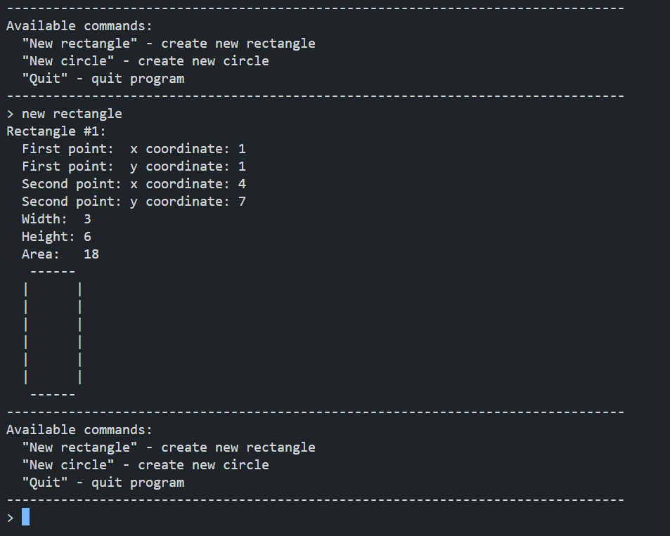

Usage Example
To calculate the area the following page was used: Area Calculation
Calculating the area and width of an object or space is a fundamental aspect of geometry and measurement.
The area represents the extent of a two-dimensional surface, usually measured in square units, while width is a linear measurement that denotes the extent of an object in one dimension.
To calculate the area of a rectangle, for instance, one multiplies
its length by its width. Similarly, the width of a line or shape is
determined by the extent between its two parallel sides.
Precision in these calculations is crucial for various fields such as
construction, architecture, and science, where accurate measurements
play a key role in designing structures, analyzing spaces, and ensuring
the overall functionality and efficiency of a given area.
Vanessa Bierbacher